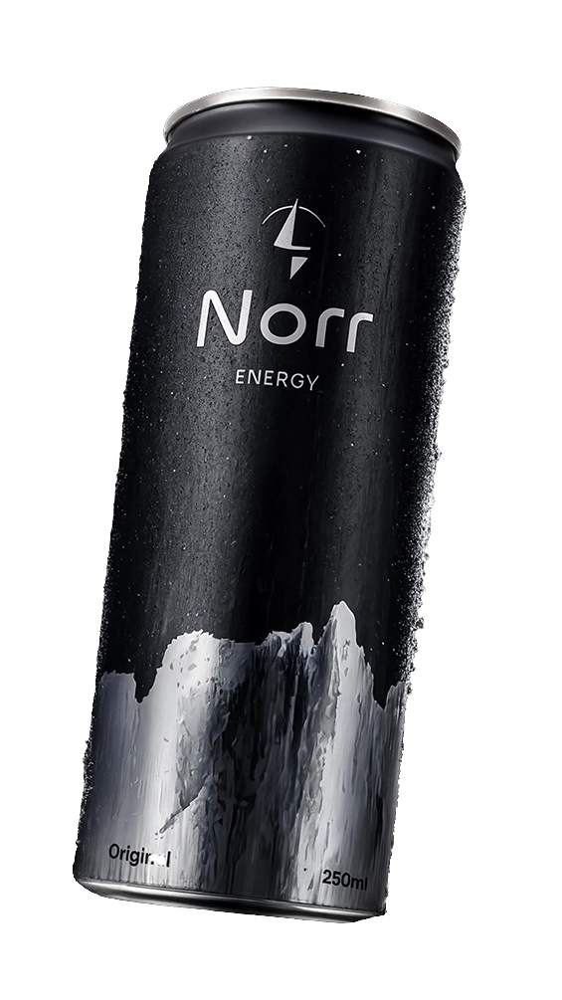
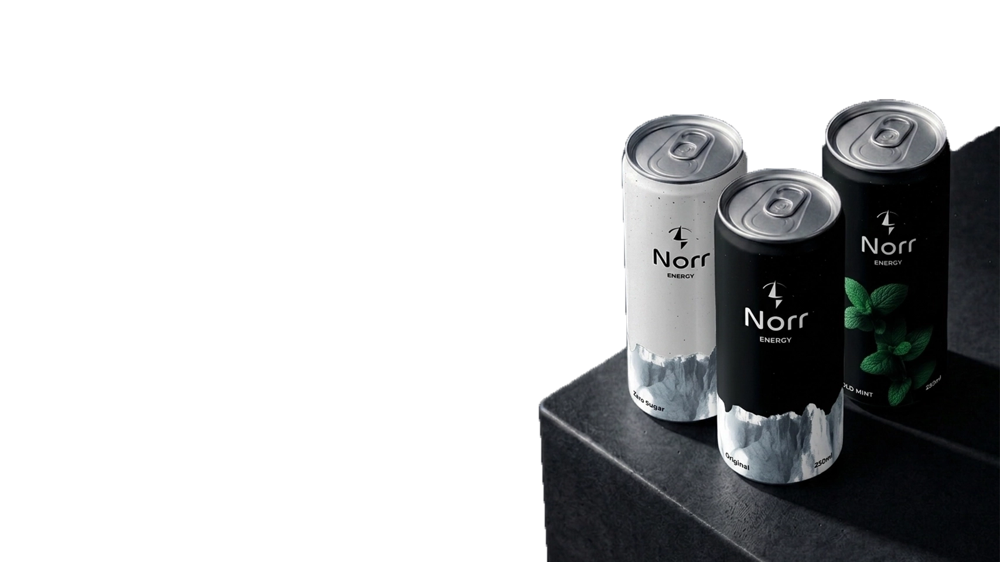

Norr is a brand shaped by the logic of the Arctic. Not only as an aesthetic theme, not as a marketing story, but as a way of thinking and functionality.

We create products connected to winter, movement, and performance in cold conditions.
Visual Identity
System kolorystyczny Norr opiera się na redukcji, inspirowanej Arktyką, gdzie dominują biel, mgła i ograniczona paleta barw. Jasne odcienie bieli i szarości budują bazę systemu — tworzą spokój, przestrzeń i czystą strukturę. Nie są puste, lecz aktywnym elementem kompozycji, który porządkuje wizualny przekaz.
Ciemne kolory, inspirowane arktycznym morzem i nocą polarną, wprowadzają kontrast, ciężar i hierarchię. Stosowane oszczędnie, podkreślają najważniejsze elementy i budują głębię. Relacja światła i ciemności odzwierciedla sam krajobraz Arktyki — rozległą jasność przełamaną mocnymi, wyrazistymi akcentami.
The logo reflects direction, energy, and purpose.

The Norr logo is built on a simplified compass needle pointing north, symbolizing direction, focus, and a clear sense of purpose. Its minimal form subtly references navigation while maintaining a clean and modern appearance.
At the same time, the shape resembles a lightning bolt, representing energy, power, and dynamic movement. Together, these elements reflect Norr’s identity as an energy drink brand, combining precision, stability, and intensity in a single mark.
Full Logo
Brandmark
Logotype
The Norr logo should always be used with restraint. It is not a decorative element, but a point of orientation within the visual system.
Clear space and proportion are essential to preserve its character and readability.
The symbol and wordmark can function together or independently, depending on context and scale.
The symbol is intended for compact applications, while the full logo ensures clarity in primary brand communication.
Primary font: Chillax
ABCDEFGHIJKLM
NOPRSTUVWXYZ
abcdefghijklmno
prstuvwxyz
0123456789
Chillax is the primary typeface used exclusively for the Norr logo. Its modernist character, geometric structure, and clean proportions give the wordmark a contemporary and confident appearance.
The typeface is expressive without being decorative, allowing the logo to remain distinctive while staying aligned with the brand's restrained and controlled visual language. Limiting the use of Chillax to the logo ensures clarity and consistency, preventing overuse and preserving its impact.

Energy in three versions
Original
The classic Norr Energy flavor, providing the perfect combination of refreshment and energy for every day.
Zero Sugar
Pure energy without sugar, created for those who want maximum stimulation without compromise.
Cold Mint
An intensely fresh, minty flavor that instantly refreshes and energizes.